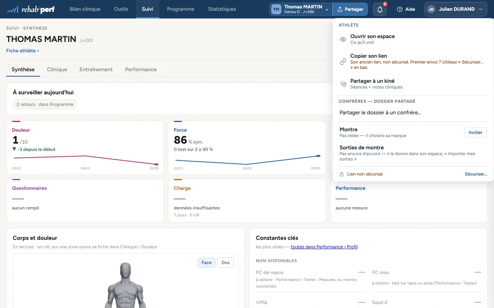
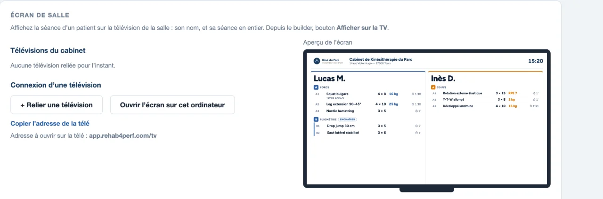
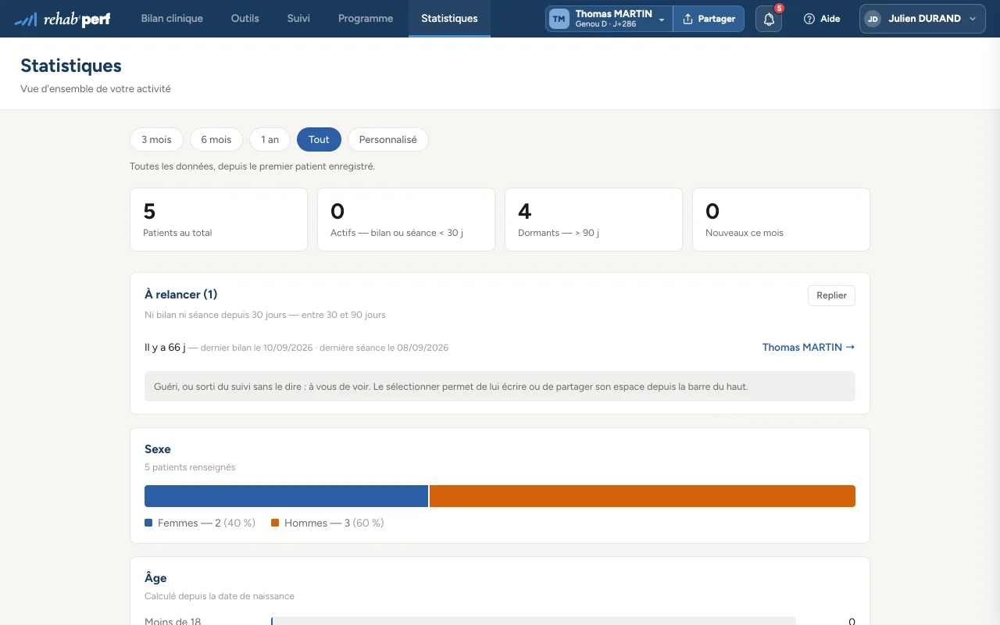

Le cabinet partage ce qui doit l'être : les modèles, les protocoles, la version du bilan, l'en-tête des courriers. Le reste reste personnel.

Le menu de partage. L'athlète, un confrère kiné, un préparateur : chacun reçoit ce qui le concerne, et rien d'autre.
Le kinésithérapeute soigne, le préparateur reconstruit. Le dossier les suit, mais pas en entier.
Une équipe ne devrait pas recréer dix fois le même protocole.
Administrateur principal, administrateurs, collaborateurs. Chacun sait ce qu'il peut faire.
La bibliothèque du cabinet, rangée en dossiers, partagée à un ou plusieurs cabinets.
Dispositions, playlists de tests, tests maison : tout le monde part de la même page.
Le logo et l'adresse du cabinet, avec la signature et le tampon de chacun.
Confier ses patients à un collègue, en sachant ce qui suit le patient et ce qui ne suit pas.
Une place payée par le cabinet, ou un abonnement personnel. Le départ ne casse rien.
Reliez l'écran une fois. Depuis le builder, la séance du patient s'affiche en grand, sans son nom complet ni son diagnostic.

Ce que la télévision affiche : le prénom, les blocs, les charges. Jamais le diagnostic.
Quatre indicateurs, des répartitions, et les régions atteintes. De quoi savoir qui vous soignez vraiment, et qui ne revient plus.

La vue d'ensemble du cabinet. L'unité de comptage est le patient, jamais le bilan.
Une bibliothèque en vidéo, un builder qui se souvient, des modèles et un agenda qui planifie.
Le courrier s'écrit pendant que vous remplissez le bilan. Il ne reste qu'à l'envoyer.
Un lien, sans compte ni mot de passe. Son programme, son corps, ses vidéos, et son retour après la séance.
Créez votre compte gratuitement, sans carte bancaire, et testez sur un dossier réel dès aujourd'hui.
Commencer gratuitement